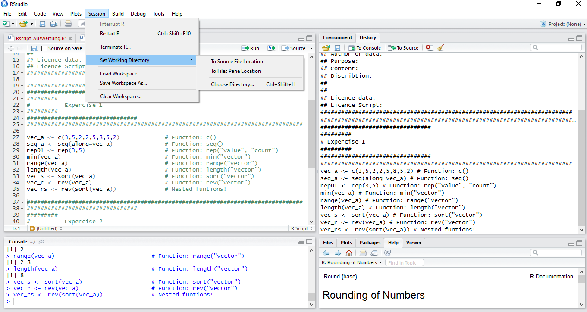

R basics
Getting used to R
Franziska Faupel
MOSAIC Summer School 2016
Structure
- First Part
- Vectors
- Functions
- Operators
- Data Frames, Martices & Arrays
- Second Part
- Load data
- Manipulate Data
- Loops and Restrictions
- Loading Packages
- Plots

1. Load Data
1. Load Data | Where is your project at home?

1. Load Data | Where is your project at home?
wd <- "C:\\Folder\\Subfolder\\SubSubFolder"
setwd(wd)
wd <- "/home/xxx/subFolder/SubSubFolder"
setwd(wd)
1. Load Data | Loading a Data Table
df_mounds <- read.table('gravemounds.csv', header=TRUE, sep=';')
# See ?read.table for further information
filename <- "gravemounds02.csv" # Creating a string vector
# Writing a data frame
write.table(df_mounds, file = filename, quote = FALSE,
sep = ";", na = "NA", dec = ".", row.names = TRUE, col.names = TRUE)
1. Load Data | Loading a Data Table
df_mounds
## Nekropole Gravemounds Inhumation Incremation Epoche
## 1 Schelmenhostadt 8 y y both
## 2 Heuschier 6 BA
## 3 Wolfswinkel 33 y y both
## 4 Deilsberg 14 y BA
## 5 Taubenhuebel 12 y y both
## 6 Eichlach 16 y y BA
## 7 Fischereck 7 y y both
## 8 Hatternstangen 18 y BA
## 9 Dachhuebel-Birklach 20 y y BA
## 10 Beckenmatt 31 y BA
## 11 Weisensee-Oberfeld 63 y y both
## 12 Erzlach 5 BA
## 13 Donauberg 14 y y both
## 14 Koenigsberg 23 y y both
## 15 Fischerhuebel-Kurzgelaend 98 y y both
## 16 Schirrheinerweg 17 y y both
## 17 Kirchlach 120 y y both
## 18 Gries 5 both
## 19 Weitbruch 15 y y BA
## 20 Harthouse 15 y y both
## 21 Maegstub 31 both
## 22 Oberstritten 1 BA
## 23 Ohlungen 3 y IA
## 24 Uhlwiller 15 y IA
## Excavated Literature Bronze Ceramics Amber Gold Glass Iron Stone
## 1 8 Schaeffer 1926 43 8 9 NA 1 1 1
## 2 1 Schaeffer 1926 NA NA NA NA NA NA NA
## 3 12 Schaeffer 1930 13 9 NA NA NA NA NA
## 4 5 Schaeffer 1926 12 3 3 1 2 NA NA
## 5 7 Schaeffer 1930 29 9 1 NA NA NA NA
## 6 9 Schaeffer 1926 7 9 NA NA NA NA 1
## 7 7 Schaeffer 1930 14 4 NA NA NA NA 2
## 8 9 Schaeffer 1926 4 11 NA NA NA NA NA
## 9 7 Schaeffer 1926 23 13 4 NA NA NA NA
## 10 26 Schaeffer 1926 15 24 NA NA NA NA NA
## 11 38 Schaeffer 1930 88 62 8 1 NA 5 NA
## 12 5 Schaeffer 1926 3 NA NA NA NA NA NA
## 13 14 Schaeffer 1930 68 24 NA NA 1 2 NA
## 14 20 Schaeffer 1930 257 50 7 3 11 30 6
## 15 89 Schaeffer 1930 304 90 20 2 8 19 13
## 16 13 Schaeffer 1930 62 11 NA 2 1 3 4
## 17 100 Schaeffer 1930 134 173 12 NA 3 13 4
## 18 2 Schaeffer 1930 7 18 NA NA NA NA NA
## 19 7 Schaeffer 1930 53 11 NA 2 NA 5 NA
## 20 9 Schaeffer 1930 118 19 NA NA 2 10 16
## 21 13 Schaeffer 1930 309 23 10 3 10 31 9
## 22 1 Schaeffer 1926 8 1 NA NA NA NA NA
## 23 3 Schaeffer 1930 101 NA 12 4 16 3 12
## 24 14 Schaeffer 1930 49 1 1 NA 3 9 1
## Coral X Y
## 1 NA 3419142 5416936
## 2 NA 3417717 5415907
## 3 NA 3421495 5415052
## 4 NA 3423415 5413753
## 5 NA 3419884 5414973
## 6 NA 3419139 5413198
## 7 NA 3416267 5413553
## 8 NA 3417327 5412854
## 9 NA 3412431 5412258
## 10 NA 3419640 5411492
## 11 NA 3422261 5411072
## 12 NA 3423314 5411595
## 13 NA 3424722 5411495
## 14 2 3425604 5412985
## 15 3 3422962 5409879
## 16 1 3421628 5408831
## 17 NA 3419741 5408021
## 18 NA 3412957 5404536
## 19 NA 3411268 5404405
## 20 1 3406774 5406406
## 21 1 3406705 5411437
## 22 NA 3412351 5418083
## 23 3 3405413 5410742
## 24 NA 3404224 5411166
1. Load Data | Creating new Data Frames using subset
df_BA <- subset(df_mounds, df_mounds$Epoche == "BA")
df_BA_INH <- subset(df_mounds, df_mounds$Epoche == "BA" & df_mounds$Inhumation == "y")
str(df_BA_INH)
## 'data.frame': 4 obs. of 17 variables:
## $ Nekropole : Factor w/ 24 levels "Beckenmatt","Dachhuebel-Birklach",..: 5 2 1 23
## $ Gravemounds: int 16 20 31 15
## $ Inhumation : Factor w/ 2 levels "","y": 2 2 2 2
## $ Incremation: Factor w/ 2 levels "","y": 2 2 1 2
## $ Epoche : Factor w/ 3 levels "BA","both","IA": 1 1 1 1
## $ Excavated : int 9 7 26 7
## $ Literature : Factor w/ 2 levels "Schaeffer 1926",..: 1 1 1 2
## $ Bronze : int 7 23 15 53
## $ Ceramics : int 9 13 24 11
## $ Amber : int NA 4 NA NA
## $ Gold : int NA NA NA 2
## $ Glass : int NA NA NA NA
## $ Iron : int NA NA NA 5
## $ Stone : int 1 NA NA NA
## $ Coral : int NA NA NA NA
## $ X : num 3419139 3412431 3419640 3411268
## $ Y : num 5413198 5412258 5411492 5404405
1. Load Data | Save your current environement

1. Load Data | Save your current environement
save.image("7ws/name01.rws")
load("7ws/name01.rws")
2. Manipulate Data
2. Manipulate Data | How to choose a specific value
df <- df_mounds # Coping df_mounds
df[c(1:3),c(2,3)]
## Gravemounds Inhumation
## 1 8 y
## 2 6
## 3 33 y
df[3, c(1,3)]
## Nekropole Inhumation
## 3 Wolfswinkel y
... and to change it
df[c(6,7,8),3] <- NA # Asign these values with NA
df[c(6,7,8),3]
## [1] <NA> <NA> <NA>
## Levels: y
2. Manipulate Data | How to choose a specific value
vector[...]
df[ row , col ]
| argument | effect | Example |
|---|---|---|
| positive integer | returns specified elements | c(1,3:4) or 2 |
| negative integer | returns all other elements | c(-1,-3:4) or -2 |
| blank spaces | returns all | |
| names | return those with specific names | c("name", "type") or "name" |
| logical | returns elements, that corresponds to TRUE | c(TRUE, FALSE) or TRUE |
2. Manipulate Data | Adding new Columns
df$newcol <- df$Excavated/df$Gravemounds*100
df$newcol
## [1] 100.00000 16.66667 36.36364 35.71429 58.33333 56.25000 100.00000
## [8] 50.00000 35.00000 83.87097 60.31746 100.00000 100.00000 86.95652
## [15] 90.81633 76.47059 83.33333 40.00000 46.66667 60.00000 41.93548
## [22] 100.00000 100.00000 93.33333
2. Manipulate Data | Combine Data Frames
merge(x, y, by = intersect(names(x), names(y)),
by.x = by, by.y = by, all = FALSE, all.x = all, all.y = all,
sort = TRUE, suffixes = c(".x",".y"),
incomparables = NULL, ...)
2. Manipulate Data | Merge Data Frames
ndf<- merge(df_mounds, df, all.x=TRUE, all.y=FALSE, by.x="Nekropole",
by.y="Nekropole")
2. Manipulate Data | Combine Data Frames
str(ndf)
## 'data.frame': 24 obs. of 34 variables:
## $ Nekropole : Factor w/ 24 levels "Beckenmatt","Dachhuebel-Birklach",..: 1 2 3 4 5 6 7 8 9 10 ...
## $ Gravemounds.x: int 31 20 14 14 16 5 7 98 5 15 ...
## $ Inhumation.x : Factor w/ 2 levels "","y": 2 2 1 2 2 1 2 2 1 2 ...
## $ Incremation.x: Factor w/ 2 levels "","y": 1 2 2 2 2 1 2 2 1 2 ...
## $ Epoche.x : Factor w/ 3 levels "BA","both","IA": 1 1 1 2 1 1 2 2 2 2 ...
## $ Excavated.x : int 26 7 5 14 9 5 7 89 2 9 ...
## $ Literature.x : Factor w/ 2 levels "Schaeffer 1926",..: 1 1 1 2 1 1 2 2 2 2 ...
## $ Bronze.x : int 15 23 12 68 7 3 14 304 7 118 ...
## $ Ceramics.x : int 24 13 3 24 9 NA 4 90 18 19 ...
## $ Amber.x : int NA 4 3 NA NA NA NA 20 NA NA ...
## $ Gold.x : int NA NA 1 NA NA NA NA 2 NA NA ...
## $ Glass.x : int NA NA 2 1 NA NA NA 8 NA 2 ...
## $ Iron.x : int NA NA NA 2 NA NA NA 19 NA 10 ...
## $ Stone.x : int NA NA NA NA 1 NA 2 13 NA 16 ...
## $ Coral.x : int NA NA NA NA NA NA NA 3 NA 1 ...
## $ X.x : num 3419640 3412431 3423415 3424722 3419139 ...
## $ Y.x : num 5411492 5412258 5413753 5411495 5413198 ...
## $ Gravemounds.y: int 31 20 14 14 16 5 7 98 5 15 ...
## $ Inhumation.y : Factor w/ 2 levels "","y": 2 2 1 2 NA 1 NA 2 1 2 ...
## $ Incremation.y: Factor w/ 2 levels "","y": 1 2 2 2 2 1 2 2 1 2 ...
## $ Epoche.y : Factor w/ 3 levels "BA","both","IA": 1 1 1 2 1 1 2 2 2 2 ...
## $ Excavated.y : int 26 7 5 14 9 5 7 89 2 9 ...
## $ Literature.y : Factor w/ 2 levels "Schaeffer 1926",..: 1 1 1 2 1 1 2 2 2 2 ...
## $ Bronze.y : int 15 23 12 68 7 3 14 304 7 118 ...
## $ Ceramics.y : int 24 13 3 24 9 NA 4 90 18 19 ...
## $ Amber.y : int NA 4 3 NA NA NA NA 20 NA NA ...
## $ Gold.y : int NA NA 1 NA NA NA NA 2 NA NA ...
## $ Glass.y : int NA NA 2 1 NA NA NA 8 NA 2 ...
## $ Iron.y : int NA NA NA 2 NA NA NA 19 NA 10 ...
## $ Stone.y : int NA NA NA NA 1 NA 2 13 NA 16 ...
## $ Coral.y : int NA NA NA NA NA NA NA 3 NA 1 ...
## $ X.y : num 3419640 3412431 3423415 3424722 3419139 ...
## $ Y.y : num 5411492 5412258 5413753 5411495 5413198 ...
## $ newcol : num 83.9 35 35.7 100 56.2 ...
2. Manipulate Data | Combine Data Frames
cbind(x,y) # Combines data frames columnwise
rbind(x,y) # Combines data frames rowise
2. Manipulate Data | Unique
unique(x, incomparables = FALSE, fromLast = FALSE, ...)
... unique() returns a vector, data frame or array like x but with duplicate elements/rows removed.
df <- data.frame(V1 = c(1,1,1), V2 = c(2,2,2), V3 = c("A","A","B"))
unique(df)
## V1 V2 V3
## 1 1 2 A
## 3 1 2 B
uni_v3 <- unique(df$V3)
uni_v3
## [1] A B
## Levels: A B
2. Manipulate Data | Unique
duplicated(x, incomparables = FALSE, fromLast = FALSE, nmax = NA, ...)
... duplicated() determines which elements of a vector or data frame are duplicates of elements with smaller subscripts, and returns a logical vector indicating which elements (rows) are duplicates.
df
## V1 V2 V3
## 1 1 2 A
## 2 1 2 A
## 3 1 2 B
duplicated(x = df, fromLast = TRUE)
## [1] TRUE FALSE FALSE
3. Loops and Restrictions
3. Loops and Restrictions
Loops repeat statements
# Loops repeat statements
a <- 1
for (i in 1:20){
a <- a+a
}
3. Loops and Restrictions
Loops repeat statements
# Loops repeat statements
a <- 1
for (i in 1:20){
a <- a+a
}
a
## [1] 1048576
3. Loops and Restrictions
# conditions restrict statements
i <- 1
a <- 1
while (a <55){
a <-a+a
i=i+1
}
3. Loops and Restrictions
# conditions restrict statements
i <- 1
a <- 1
while (a <55){
a <-a+a
i=i+1
}
a
## [1] 64
i
## [1] 7
3. Loops and Restrictions
# conditions restrict statements
if (a>55){
a <- a/2
} else {
a <- a*2
}
3. Loops and Restrictions
# conditions restrict statements
a
## [1] 32
if (a>55){
a <- a/2
} else {
a <- a*2
}
a
## [1] 64
3. Loops and Restrictions
| Loops or Restrictions | starts | Condistions | Indside | Ends |
|---|---|---|---|---|
| Loop | for |
(i in "repetition") |
{ result <- "functions to apply" |
} in a seperate line |
| Restrictions | while |
(i in "condition") |
{ result <- "functions to apply" |
} in a seperate line |
| Restrictions | if in combination with else |
(i in "condition") |
{ result <- "functions to apply" |
} in a seperate line |
| Restrictions | else |
(i in "condition") |
{ result <- "functions to apply" |
} in a seperate line |
4. Package management
4. Package management
Package management:
old.packages() # Your currently installed packages
update.packages() # Update all Packages
update.packages("package-name") # Update a specific package
Loading Packages:
install.packages("package-name") # Download and install the named package
Using Packages:
library(package-name) # Loading packages every time you restart R!
5. Plots
5. Plots | Histogram
hist_gm <- hist(df_mounds$Gravemounds)

hist_ex <- hist(df_mounds$Excavated)

5. Plots | Histogram
plot(hist_gm, main="Gravemounds of Haguenau Froest", xlab="Number of Gravemounds",
sub="Schaeffer 1926/1930", col="dark red")
Plots | Violinplots
library(vioplot)
vioplot(df_mounds$Gravemounds)

Plots | ggplot2
library(ggplot2)

Exercise 3
# 1. Set your working directory.
# 2. Load gravemound.csv
# 3. Save created Data Frame of Iron Age graves using `subset`
# 4. Save this Data Frame in your Subfolder `2data`
# 5. Explore following functions `rbind()` and `cbind`
# 6. Create and edit a Histogramm and a Violinplot.
# 7. Use `?plot` to create a scatterplot.
# 8. Download and load all neccessary packages for our next lecture.